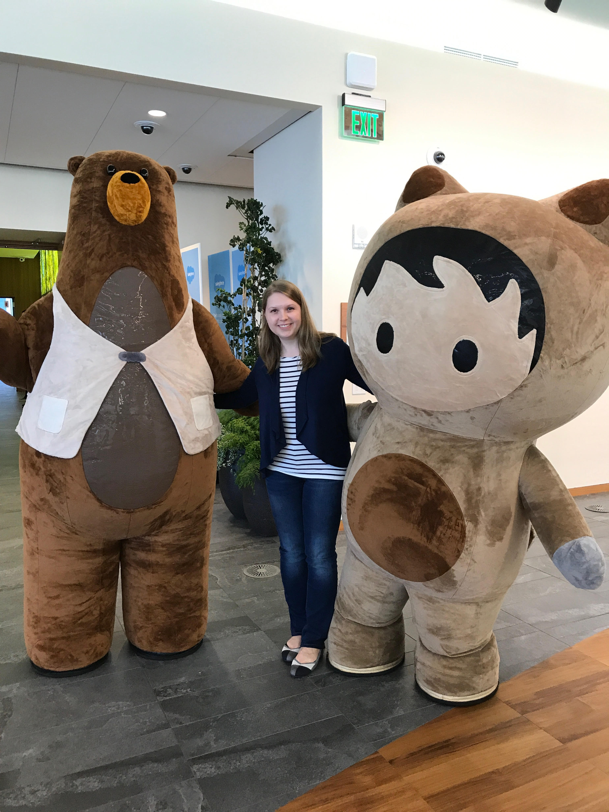

About Me
"She was not quite what you would call refined. She was not quite what you would call unrefined. She was the kind of person that keeps a parrot.”
My name is Anna, and these words by Mark Twain highly resonate with me because I am sharing my life with 3 beautiful parrots, two of which I adopted from the bird rescue organization. My birds make my life more meaningful because they teach me how to be patient, pause, take notice, and be a better person and a caretaker. Aside from spending time with my birds, I like to practice yoga and go for bike rides. Also, I volunteer for multiple non-profit organizations concerned with animal welfare causes and environmental protection.
I originally came to the USA from Russia in 2008 to fulfill my desire of leaving abroad and learning about a foreign country and its people. My parents are still in Russia, and I dearly miss them. I hope one day they can visit. I like to travel myself, and my ideal travel destination would be a busy megapolis containing a lot of historical artifacts and monuments.
I have a Law Degree from one of the Russia’s universities, but when I learned about the program called Year Up, whose mission is to close the Opportunity Divide by providing young adults with the technical skills, experience, and support, I decided to seize that opportunity and applied. I successfully graduated from the program in 2012.
Through this program, I now have a dreamjob as a Platform Specialist with a company called Salesforce. While working there, I realized that I want to continue with personal development and that I’d like to pursue a career of a software engineer. The company empowered and motivated me to dream bigger. That’s why I can say Salesforce is my #dreamjob. I am currently attending a coding bootcamp to continue with my path of becoming a software engineer.